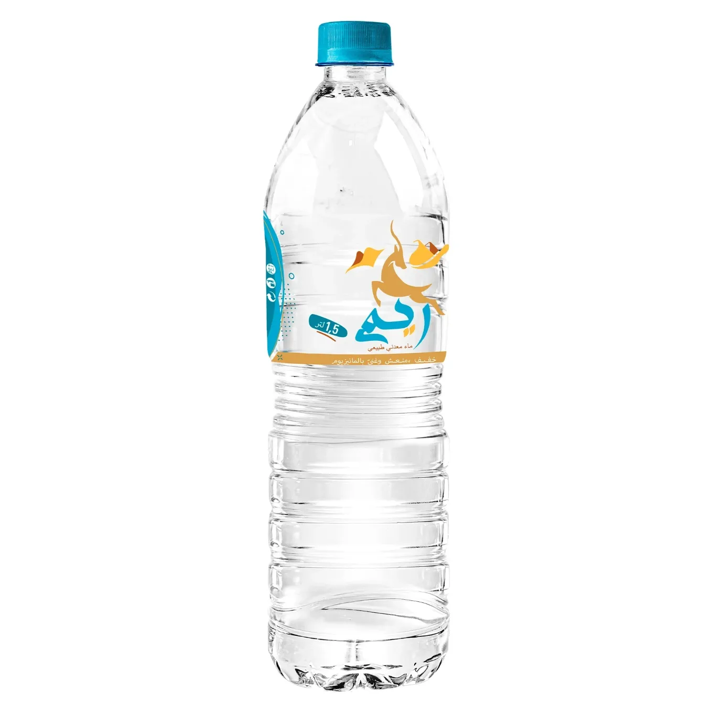

← Prix de toutes les eaux minérales en Tunisie

| Format | Prix bouteille par enseigne | Stika |
|---|---|---|
| 500 ml | Carrefour 0,430 DT | 5,160 DT (×12) |
| 1.5 L | Carrefour 0,670 DT · Géant 0,690 DT | 4,020 DT (×6) |
| 2 L | Carrefour 0,860 DT | 5,160 DT (×6) |
Prix relevés le 29/09/2026 sur les boutiques en ligne des grandes surfaces — indicatifs, ils peuvent varier selon le magasin. Stika = pack de 6 bouteilles (12 pour les 50 cl).
Sur Prix des Eaux de Tunisie, ajoutez vos stikas Rim au panier avec le bouton +, indiquez votre adresse et recevez votre eau à domicile — le prix total et les frais de livraison vous sont confirmés sur WhatsApp, paiement à la livraison.